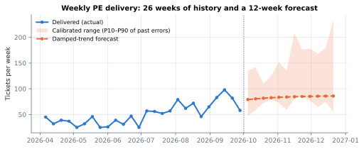

PE Delivery Analytics: what it tells us, how far to trust it, and how it stays safe
By Jorge E. Rodriguez, M.Sc. · Platform Engineering · October 2026 · Companion to the technical white paper
Bottom line
One dashboard, built only on our Jira data, now answers four leadership questions: are we meeting our SLAs,
when will work finish, how much can we take on, and who should do what.
Every forecast was tested against what actually happened in past months. The dates we tell people to commit to
are met about as often as promised (93% vs a target of 85%), and the team's 4-week delivery forecast landed inside
its range 82% of the time.
The dashboard only recommends. It changes Jira only when an engineer turns writing on, on their own computer,
reviews the changes and confirms them. Every change is logged, commented in Jira and can be undone.
The questions it answers
1. Are we meeting our commitments?SLA compliance and two breach rates against our goal of under 10% breached, the trend, and the specific
tickets that are late or about to be.SLA · Executive Summary pages
2. When will work finish, and start?For every ticket in progress or in the backlog: a likely date and a safe date to commit to, and whether
it will make its SLA.In Progress · Backlog pages
3. How much can we take on?Tickets the team will likely deliver in the next 4, 8 and 12 weeks with an honest range, and a
“can we commit to this project?” calculator.Delivery Forecast · Capacity pages
4. Who should do what, and what slows us down?A suggested owner for each new ticket, with backup and reason; and the friction (waiting, access,
approvals) that comments show costs us the most time.Suggested Assignments · Teams Conversations pages
How it works, in plain terms
One source, one set of definitions. Every page counts tickets, completions and SLA dates the same way,
so the numbers agree from page to page.
Business days, like our SLAs. Weekends and company holidays are skipped everywhere.
Learns from our own history. Forecasts come from how similar tickets actually went for this team,
with recent work counting more.
Ranges, not single dates. “Likely” is a coin flip; “safe” is what to commit to.
Explainable. Every number traces back to tickets, and every recommendation says why. No AI writes the text;
it comes from fixed, tested rules.
Kept honest. Models that didn't beat simpler methods in testing were removed.

Weekly PE delivery (blue) and the 12-week forecast (orange) with its range. Likely next 4 weeks: about
324 tickets (range 257–512).
How far to trust it
Each forecast was re-run at past dates, using only what was known at the time, and compared with what happened.
Forecast
What we checked
Result
Verdict
Safe finish date, work in progress
Share of tickets finished by their safe date (target 85%)
93%
Reliable, slightly cautious
Likely finish date, work in progress
Typical miss
1 business day
Reliable
Team delivery, next 4 weeks
Actual result inside the forecast range (target ~80%)
82%
Reliable
Team delivery, next 8 / 12 weeks
Actual result inside the range
68% / 60%
Use as a guide
Team delivery, central estimate
Typical error
±22–24%
Good for planning
When backlog work will start
Typical miss; bias
±8 bd; none
Useful, ±3 weeks
“Safe Start” date
Share started by it (target 85%)
84%
Reliable
Target start dates in Jira today
Share of tickets that started by them
12%
Usually ~11 bd too early
What this means: use the dashboard's safe dates when committing to requesters; treat
forecasts beyond about two months as directional; and prefer the forecast start dates over the Target start dates
currently entered in Jira.
Safeguards
Risk
Protection
Unintended changes to Jira
Writing is off by default and only works on the engineer's own computer. Nothing is pre-selected; changes are shown before sending and need a typed confirmation. At most 25 tickets at a time.
Overwriting a colleague's edit
Each ticket is re-checked just before the change; if someone changed it in the meantime, it is skipped.
Changes nobody can trace
Every change adds a Jira comment (what, why, batch) and is recorded in an audit log.
A batch that turns out wrong
One-step undo restores the previous values, but never overrides someone's later edits.
Improving the SLA by moving dates
Tickets whose dates were moved are still judged against their original start date.
Assigning the wrong person
People are assigned by their Jira account, never by name lookup; departed team members are never suggested.
Misusing per-person views
They exist to balance workload, not to rate people; individual speed is pulled toward the team average so a few tickets can't label anyone.
Limits to keep in mind
It is only as good as Jira. Missing sizes and Target start dates leave tickets unassessed or judged as Medium.
Comment themes show association, not proof. Long tickets naturally collect more comments.
The assignment suggestions are new. Whether following them improves SLA results still has to be measured.
What we recommend
Make Size and Target start required at intake, so every ticket has an SLA clock.
Commit to requesters using “safe” dates, not likely ones.
Pilot Suggested Assignments for 4–6 weeks and compare SLA results for followed vs not-followed suggestions.
Peer-review the technical white paper before wider circulation.
Generated reports are kept out of the code repository, and every code change runs 400+ automated tests. Figures as of October 8, 2026 (6,096 Jira issues over 24 months). Methods, formulas and full test results are in the technical white paper, From Jira Records to Forecasts, Risk and Assignments.